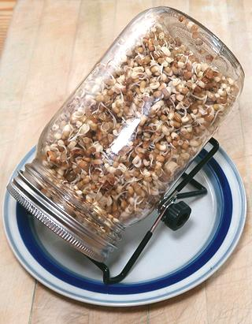

Sprouting Bean, Peas, & Lentils Sprouts

A Sprouting Jar with
screen lid like the one in the photo is all you need to successfully
sprout beans, peas, lentils. Sprouting caps are easy to find on the
Internet, and are just about all sized to fit a wide mouth Mason
canning jar.
Of course, there are more complex sprouters available but this
is fine, especially when sprouting for Indian recipes. If you want
to sprout grassy things you mow for your salad, that's another
matter entirely.
Don't expect to produce sprouts with straight plump stems like the
commercial ones in the photo at top of page - this takes special
equipment and techniques. Sproutable Mung Beans are very widely available
in North America, but soybeans for sprouting are usually special small
varieties. These can be found on-line, and possibly in Korean markets.
The sprouts in the photo are Moth Beans (Matki), very popular in India.
Always take care with sanitation, as sprouts can host E.coli and
Salmonella. This is usually a problem with commercial sprouts, which
will spend a fair amount of time between sprouter and salad.
Warning:
Do not sprout Red Kidney Beans. They are toxic
and need to be pre-soaked and cooked at a boil for at least 10 minutes.
The FDA recommends 30 minutes just to make sure. Also, never cook them
in a slow cooker, that low a temperature can increase the toxicity up
to 5 times.
Procedure
- Select Beans that are very fresh, from a source with high turnover.
Old beans will not sprout well, or at all. Some vendors sell beans
specifically for sprouting.
- Wash the equipment to be used.
- Select a quantity of beans that will not overload the sprouter -
they need good air circulation. About 1/2 to 2/3 cup is good for a jar
sprouter like the one in the photo. The sprouts in the photo started
as 1/2 cup dry and yielded more than 2-1/2 cups sprouted.
- Rinse the beans well, then soak them in cool water for 8 to 12 hours,
just as if you were going to cook them (except no salt). Very small
beans like the Moth Beans in the photo take only 6 hours.
- Drain the beans well and rinse with cool water.
- Put them in the sprouter, if that isn't where they already are.
- Place the sprouter in a location at about 70°F/21°C, away
from direct sunlight. Unlike sprouting grassy things, light isn't
important for most legumes. The jar should be at an angle, either on
a rack as in the photo, or in a bowl.
- Rinse with cool water twice per day in cool weather, morning,
noon, and night in hot weather. This will keep the beans properly
moist and prevent mold and other unwanted organisms from getting
established. Always drain so there is no free water in the sprouter.
Some jar sprouters have a stand that tilts them towards the screen,
but I just leave the jar in a bowl as shown. For other type of
sprouters, follow their instructions.
- When the sprouts have reached the desired degree of sprouting, rinse
them. You can separate out loose skins by swishing them around in a
pan of cool water, the skins tend to float for easy removal.
- Make sure the sprouts are well drained. Bag them and store in the
refrigerator for no more than a couple of days.
bp_sproutm 151002 - www.clovegarden.com
©Andrew Grygus - agryg@clovegaden.com - Photos on
this page not otherwise credited are ©
cg1 - Linking to and non-commercial
use of this page permitted